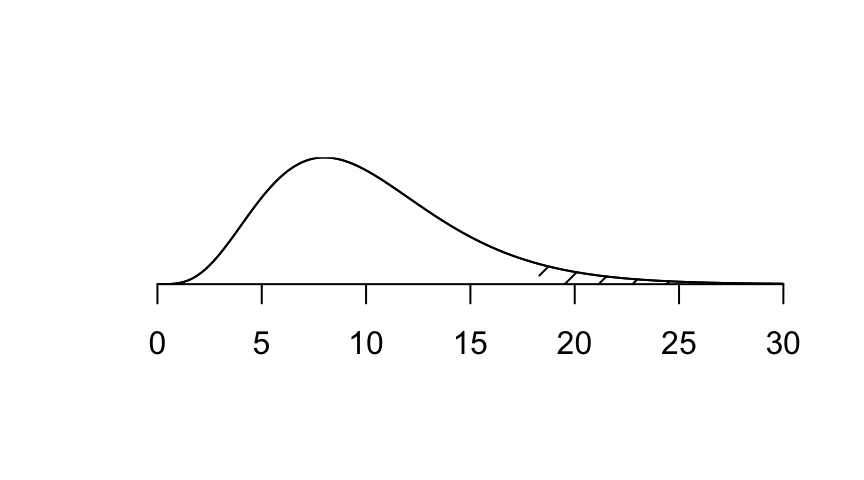

age mxs ECx dx
1 60 0.00794 762.0 8
2 61 0.00863 755.2 10
3 62 0.00949 761.8 5
4 63 0.01019 752.0 8
5 64 0.01100 733.0 13
6 65 0.01199 709.0 16[1] 23.66Chapter 15: Comparing Mortality Rates
25/11/2026
In the last chapter, we
Defined central exposed to risk \(E_x^C\) and used Lexis diagrams to identify the relevant observation times and deaths.
Approximated exposure from census counts using the trapezium rule.
Used the principle of correspondence to match the age definitions for deaths and exposure.
Standard mortality rates are mortality rates for a (usually) large reference population. For example, national life tables provide standard mortality rates.
It is often of interest to compare a set of observed mortality rates, for a study population, with a relevant set of standard rates.
We denote the standard mortality rate at age \(x\) by \(m^S_x\), and the corresponding observed death count and total exposure in the study population by \(D_x\) and \(E^C_x\) respectively (it is assumed that the observed and standard rates are comparable in terms of definition).
A standardised mortality ratio \(r_x\) at age \(x\) is the ratio of the number of observed deaths to the number of deaths expected in the standard population for the same exposure
\[ r_x\;=\;\frac{D_x}{m^S_x E_x^C}\;=\;\frac{\hat{m}_x}{m^S_x} \]
For example, suppose that we observe a regional population of 60-70 year old males over a short period, and wish to compare observed mortality rates with the interim life tables (England from 2011 to 2013).
| \(x\) | \(m^S_x\) | \(E^C_x\) | \(D_x\) | \(r_x\) |
|---|---|---|---|---|
| 60 | 0.00794 | 762.0 | 8 | 1.32 |
| 61 | 0.00863 | 755.2 | 10 | 1.53 |
| 62 | 0.00949 | 761.8 | 5 | 0.69 |
| 63 | 0.01019 | 752.0 | 8 | 1.04 |
| 64 | 0.01100 | 733.0 | 13 | 1.61 |
| 65 | 0.01199 | 709.0 | 16 | 1.88 |
| 66 | 0.01330 | 680.8 | 18 | 1.99 |
| 67 | 0.01479 | 657.5 | 12 | 1.23 |
| 68 | 0.01586 | 640.7 | 14 | 1.38 |
| 69 | 0.01781 | 632.0 | 11 | 0.98 |
There seems to be some large discrepancies between mortality rates in our study population and the standard population, i.e. the values of \(r_x\) are not close to one.
A formal comparison involves testing the null hypothesis that our observed death pattern has been generated by the standard rates.
We know that, for the two-state or Poisson models, the central mortality rate
\[ \hat{m}_x\;=\;\frac{D_x}{E^C_x} \]
is the maximum likelihood estimate for the central mortality rate \(m_x\) (equivalently an assumed constant force of mortality \(\mu_x\) over \([x,x+1)\)), and hence in large samples we can use the normal approximation
\[ \begin{aligned} \hat m_x \mathrel{\sim} N\left(m_x,\frac{m_x}{E_x^C}\right) &\Rightarrow\quad \frac{\hat m_x-m_x}{(m_x/E_x^C)^{1/2}}\mathrel{\sim}N(0,1) \\[2pt] &\Rightarrow\quad \frac{(\hat m_x-m_x)^2}{m_x/E_x^C}\mathrel{\sim}\chi_1^2\\[2pt] &\Rightarrow\quad \frac{(E_x^C\hat m_x-E_x^C m_x)^2}{E_x^C m_x}\mathrel{\sim}\chi_1^2\\[2pt] &\Rightarrow\quad \frac{(D_x-E_x^C m_x)^2}{E_x^C m_x}\mathrel{\sim}\chi_1^2 \end{aligned} \]
As we assume that numbers of deaths in different age years are independent, we have that
\[ \sum_x \frac{(D_x-E^C_xm_x)^2}{E^C_xm_x}\;\mathrel{\sim}\;\chi^2_v \]
where \(v\) here is the number of age groups over which mortality rates are being compared.
To test the null hypothesis \(H_0\): \(m_x=m^S_x\), we have the test statistic
\[ X^2\;=\;\sum_x \frac{(D_x-E^C_xm^S_x)^2}{E^C_xm^S_x} \]
and reject \(H_0\) if the observed value of \(X^2\) is in the upper tail of the \(\chi^2_v\) distribution (typically, the threshold for rejection is the \(95\)-th percentile).
For the data in Section 15.1, we have
\[ X^2\;=\;\frac{(8-6.050)^2}{6.050}+\cdots + \frac{(11-11.256)^2}{11.256}\;=\;23.66 \]
In R
age mxs ECx dx
1 60 0.00794 762.0 8
2 61 0.00863 755.2 10
3 62 0.00949 761.8 5
4 63 0.01019 752.0 8
5 64 0.01100 733.0 13
6 65 0.01199 709.0 16[1] 23.66We compare this against a chi-squared distribution with \(10\) degrees of freedom, and we clearly reject at the 5% level of significance (\(\chi^2_{10, 0.95} = 18.31\)) and even at the 1% level (\(\chi^2_{10, 0.99} = 23.21\)).
In R, the quantiles of the \(\chi^2\) are
[1] "18.31 23.21"Also,
df <- 10
critical <- qchisq(0.95, df)
x <- seq(0, 30, length.out = 1000)
tail <- seq(critical, 30, length.out = 500)
plot(x, dchisq(x, df), type = "l", xlab = "", ylab = "",
xaxs = "i", yaxs = "i", yaxt = "n", bty = "n")
polygon(c(critical, tail, 30), c(0, dchisq(tail, df), 0),
density = 8, angle = 45, border = NA)
lines(x, dchisq(x, df))
\(\chi^2_{10}\) distribution with upper \(5\%\) tail indicated.
A general rule of thumb is that conclusions from a chi-squared test can be considered reliable if all of the \(E^C_xm^S_x\) values are greater than \(1\), and no more than \(20\%\) of them are less than \(5\).
The chi-squared test is usually a very sound omnibus test; i.e., it can detect a wide range of discrepancies between a set of observed and standard rates.
However, other tests exist which can be more powerful to detect particular kinds of discrepancy, in particular,
Bias, where the observed rates are generally higher or lower than the standard rates.
Patterns of differences, where there are parts of the age spectrum with positive bias (observed rates higher than standard) and parts of the age spectrum with negative bias.
Extreme differences, where there are a small number of age groups where the observed and standard rates are very different.
Caution is required when performing multiple tests of (essentially) the same hypothesis (goodness-of-fit of standard mortality rates to a set of observed rates).
If we have a hypothesis which is true, and we perform \(5\) independent tests of the hypothesis then, with probability \(1-0.95^5=0.226\), we will observe at least one significant result (at the \(5\%\) level).
So, sound advice is to just use a single test, usually an omnibus chi-squared test unless you have an a priori reason to expect a particular kind of discrepancy.
If the null hypothesis is rejected, examine the patterns of observed and standard rates to identify why there is a significant difference.
If the null hypothesis is not rejected, you can still examine the patterns of observed and standard rates to investigate whether there might be any cause for concern about a discrepancy not detected by your omnibus test, but be cautious about any further formal hypothesis testing.
Bearing in mind the caution advised in using further tests, we will introduce some other possible tests to detect differences between observed and standard mortality rates.
We consider tests for bias.
We recall from Section 15.3 that we have the approximation
\[ \begin{aligned} \hat m_x &\mathrel{\sim} N\left(m_x,\frac{m_x}{E_x^C}\right)\\[2pt] &\Rightarrow\quad \sum_x E_x^C\hat m_x\mathrel{\sim} N\left(\sum_x E_x^C m_x,\sum_x E_x^C m_x\right)\\[2pt] &\Rightarrow\quad \frac{\sum_x (D_x-E_x^C m_x)}{\left(\sum_x E_x^C m_x\right)^{1/2}} \mathrel{\sim} N(0,1) \end{aligned} \]
To test the null hypothesis \(H_0\): \(m_x=m^S_x\), we have the test statistic
\[ Z\;=\;\frac{\sum_x (D_x-E^C_xm^S_x)}{\left(\sum_xE^C_xm^S_x\right)^{1/2}} \]
and reject \(H_0\) if \(z\), the observed value of \(Z\), is in either tail of the standard normal distribution (typically, the threshold for rejection is \(|z|>1.96\), giving a significance level of \(5\%\)).
The sign test is easy to apply, but generally has low power. The test statistic for the sign test is \(S=\sum_x U_x\) where
\[ U_x\;=\;\left\{ \begin{array}{lll} 1&\mbox{if }\hat{m}_x\ge m^S_x&\quad\mbox{(so $\hat{m}_x- m^S_x$ has a non-negative sign)}\\ 0&\mbox{if }\hat{m}_x<m^S_x&\quad\mbox{(so $\hat{m}_x- m^S_x$ has a negative sign)}\\ \end{array}\right. \]
Under the null hypothesis \(H_0\): \(m_x=m^S_x\), we have that the \(U_x\) are independent and use the approximation \(\mathbb{P}(U_x=1)\approx 0.5\), and therefore that the reference distribution of \(S\) is binomial\((v,0.5)\) where \(v\) is the number of age groups.
We reject \(H_0\) if the observed value of \(S\) is in either tail of the binomial.
For all but very small values of \(v\), a normal approximation to the binomial can be used, so we reject \(H_0\) if \(|z|>z_{1-\alpha/2}\), at significance level \(\alpha\), where \(z\) is the observed value of
\[ Z\;=\;\frac{S\pm\frac{1}{2}-\frac{v}{2}}{\left(\frac{v}{4}\right)^{1/2}}. \]
Note the continuity correction (\(+\frac{1}{2}\) if \(S<\frac{v}{2}\), \(-\frac{1}{2}\) if \(S>\frac{v}{2}\)).
For the data in Section 15.1, we have, for the cumulative deviations test, \(\sum_x D_x=115\) and \(\sum_x E^C_xm^S_x=84.220\), and therefore
\[ z\;=\;\frac{115-84.220}{84.220^{1/2}}\;=\;3.354 \]
The \(0.975\)-th quantile of \(N(0,1)\) is \(z_{0.975} = 1.96\). So \(\mathrm{H}_0\) is rejected at \(5\%\) level.
RFor the sign test, \(u=(1,1,0,1,1,1,1,1,1,0)\) and therefore \(s=8\) and
\[ z\;=\;\frac{7.5-5}{2.5^{1/2}}\;=\;1.581 \]
This is not significant at the \(5\%\) level of significance since \(z_{0.975} = 1.96\).
RIn R
[1] 8[1] 1.581[1] 0.1138The actual binomial p-value (probability of observing \(S=8\) or more extreme) is \(0.109\) (very similar).
This illustrates the lack of power of the sign test.